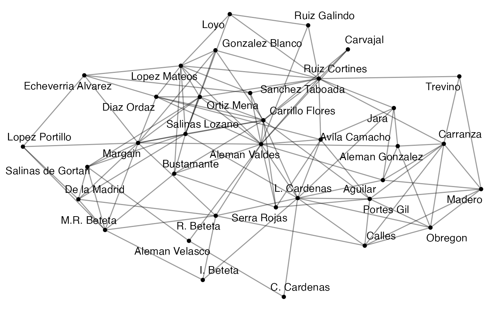
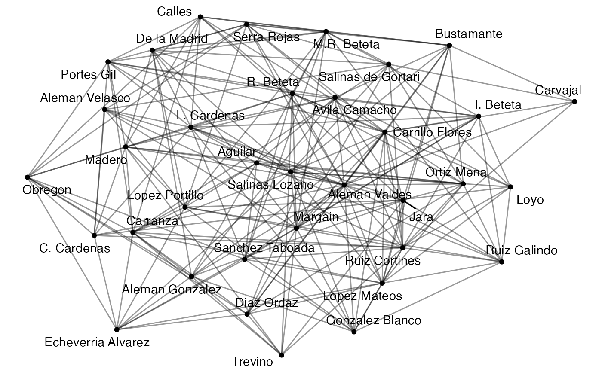
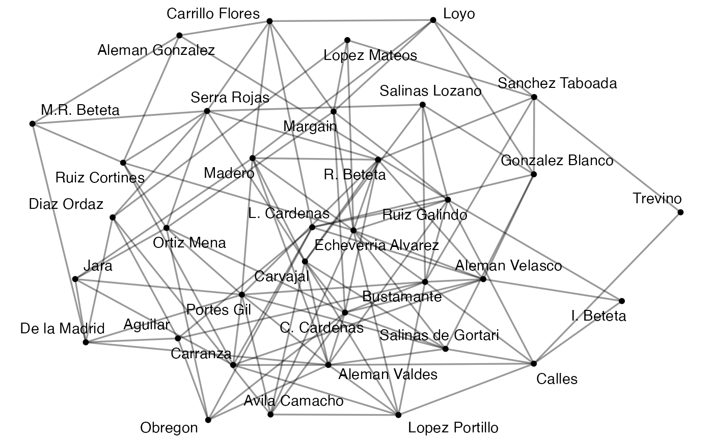
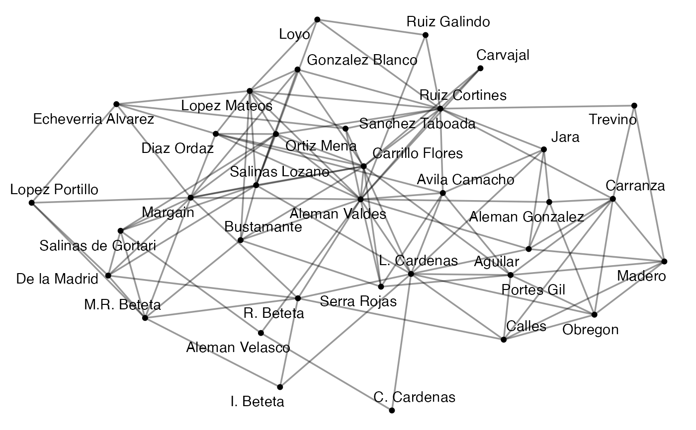

These functions allow users to add attributes to a graph from another graph or from a specified vector supplied by the user.
add_node_attributes(object, attr_name, vector)
add_edge_attributes(object, attr_name, vector)
copy_node_attributes(object, object2)
join_edges(object, object2, attr_name)An object of a migraph-consistent class:
matrix, from base R
edgelist, a data frame from base R or tibble from tibble
igraph, from the igraph package
network, from the network package
tbl_graph, from the tidygraph package
Name of the new attribute in the resulting object.
A vector of values for the new attribute.
A second object to copy nodes or edges from.
add_node_attributes: Insert specified values from a vector into the graph
as node attributes
add_edge_attributes: Insert specified values from a vector into the graph
as edge attributes
copy_node_attributes: Copies node attributes from a given graph into specified graph
join_edges: Copies edges from another graph to specified graph and
adds an edge attribute identifying the edges that were newly added
add_node_attributes(mpn_elite_mex, "wealth", 1:35)
#> IGRAPH f2996ac UNW- 35 117 --
#> + attr: name (v/c), full_name (v/c), entry_year (v/n), military (v/n),
#> | in_mpn (v/n), PlaceOfBirth (v/c), state (v/c), region (v/n), wealth
#> | (v/n), weight (e/n)
#> + edges from f2996ac (vertex names):
#> [1] Madero --Carranza Madero --Obregon
#> [3] Madero --Calles Madero --Aguilar
#> [5] Trevino --Madero Madero --Portes Gil
#> [7] Carranza--Obregon Carranza--Calles
#> [9] Carranza--Aguilar Trevino --Carranza
#> [11] Carranza--Portes Gil Carranza--Aleman Gonzalez
#> + ... omitted several edges
add_node_attributes(mpn_elite_usa_advice, "wealth", 1:14)
#> IGRAPH 0a60326 UN-B 34 46 --
#> + attr: type (v/l), name (v/c), wealth (v/n)
#> + edges from 0a60326 (vertex names):
#> [1] Albright --ASPEN Albright --CFR Albright --CNAS Argyros --CNI
#> [5] Argyros --CSIS Argyros --HOOVER Armitage --ACUS Armitage --CNAS
#> [9] Armitage --CSIS Curry --AEI Curry --MI Curry --NAF
#> [13] Fukuyama --IAD Fukuyama --NAF Fukuyama --RAND Gray --ACUS
#> [17] Gray --CATO Gray --CGD Gray --RF Gray --RFF
#> [21] Greenberg--CNI Greenberg--CSIS Greenberg--IIE Greenberg--NAF
#> [25] Hills --CFR Hills --CSIS Hills --IAD Hills --IIE
#> [29] Kissinger--ACUS Kissinger--CNI Kissinger--CSIS Peterson --CFR
#> + ... omitted several edges
add_edge_attributes(ison_adolescents, "weight", c(1,2,1,1,1,3,2,2,3,1))
#> IGRAPH 799a6c5 UNW- 8 10 --
#> + attr: name (v/c), weight (e/n)
#> + edges from 799a6c5 (vertex names):
#> [1] Betty--Sue Sue --Alice Alice--Jane Sue --Dale Alice--Dale
#> [6] Jane --Dale Sue --Pam Alice--Pam Pam --Carol Carol--Tina
autographr(mpn_elite_mex)

both <- join_edges(mpn_elite_mex, generate_random(mpn_elite_mex), "random")
autographr(both)

random <- to_uniplex(both, "random")
autographr(random)

autographr(to_uniplex(both, "orig"))
